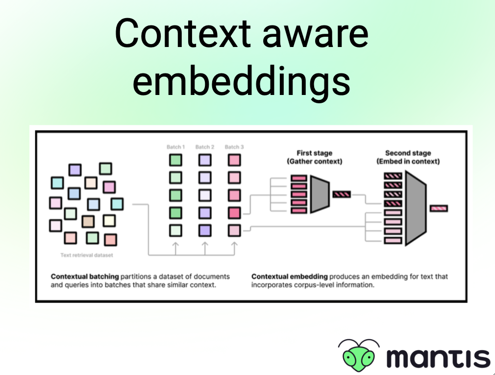

Out-of-domain embeddings
📑 Do you need context aware embeddings?
Embeddings are the semantic representations of our data that enable us to search over our data and retrieve the most relevant information. Using embeddings allow us to find similar data to our query even if there is no overlap of keywords, which is where traditional keyword based approach fail ❌
On the other hand, keyword based approaches are quite good at creating context aware representations since they rely on statistics of your data such as how often certain keywords appear in your documents. And while embeddings can incorporate that information from the corpus they are trained, that might be different than your data ⚠️
In that case, you are better of using a model that can produce context-aware embeddings. One way to achieve this is by generating embeddings representing your domain, and feeding those into the model together with your query hThis results in a different, more context-aware representation for the same query, taking c domontextual information about your domain into consideration 🚀
Read more about this approach https://arxiv.org/pdf/2410.02525
